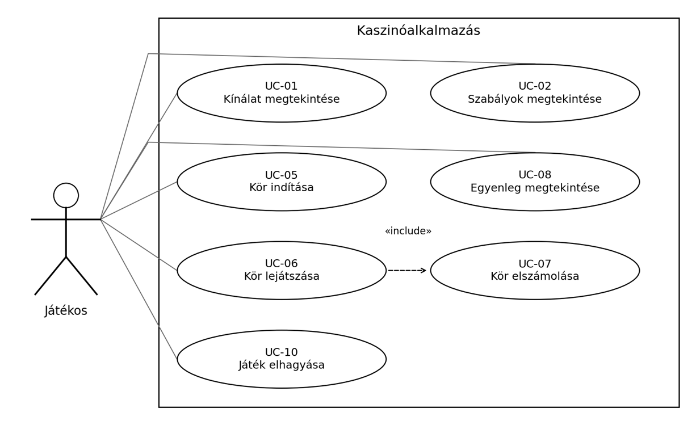

Történet
Az 1.0 változat a teljes SRS munkaváltozata. Az alábbi öt sor a dokumentum részeinek kiosztását rögzíti. A szerző oszlop a kijelölt felelőst jelöli; a tényleges elkészítési és ellenőrzési időpontok a munkavégzés után vezetendők át.
| Dátum | Verzió | Leírás | Szerző |
|---|---|---|---|
| 2026. 10. 20. | 1.0 | 1–2. és 13. fejezet: célok, környezet, fogalmak, melléklet. | Varga Ákos |
| 2026. 10. 22. | 1.1 | 3.1–3.2. fejezet: alapkövetelmények, fiók és játékválasztás. | Száraz Bálint Csaba |
| 2026. 10. 24. | 1.2 | 3.3–3.4. fejezet: játékmenet, elszámolás, előzmények. | Csanálosi Bálint |
Tartalomjegyzék
- 1. Bevezetés
- 2. Áttekintés
- 3. A rendszer funkciói
- 3.1. Alapkövetelmények
- 3.2. Fiók és játékválasztás
- 3.3. Játékmenet és elszámolás
- 3.4. Adatok és kilépés
- 4. Használhatóság
- 5. Megbízhatóság
- 6. Teljesítmény
- 7. Támogatottság
- 8. Tervezési korlátozások
- 9. On-line dokumentáció és Help rendszer
- 10. Felhasznált kész komponensek
- 11. Interfészek
- 12. Alkalmazott szabványok
- 13. Mellékletek
1. Bevezetés
1.1. Cél és érvényesség
A dokumentum a Kaszinótojások csapat kaszinójellegű webalkalmazásának szolgáltatásait, működési szabályait és minőségi követelményeit rögzíti. A fejlesztők számára a tervezéshez, a tesztelők számára az ellenőrzéshez, az oktató számára a vállalt hatókör értékeléséhez biztosít alapot.
Az alkalmazás kizárólag virtuális zsetonokkal működik. Nem fogad valódi pénzt, nem biztosít zsetonvásárlást, pénzkifizetést vagy pénzre váltást. A cél a játékok megismerése és szórakoztató kipróbálása.
1.2. A követelmények állapota
Az FK jel funkcionális, a H használhatósági, az M megbízhatósági, a T teljesítménykövetelményt azonosít. A számszerű célértékek az SRS javasolt elfogadási feltételei, nem már elvégzett mérések. A vízióban feltételes fiókkezelés és tartós előzménytárolás itt is feltételes: csak a modul vállalásakor kötelező.
1.3. Kapcsolódó dokumentumok
Kiindulási alap a csapat Vízió dokumentuma és a tantárgy SRS mintája. A formai követelmények forrása az oktatói dokumentumformátum-leírás. A forrásjegyzék a 13. fejezetben található. A végleges terméknév még meghatározandó; a Kaszinótojások a csapat neve.
2. Áttekintés
2.1. Termékkörnyezet és fő szolgáltatások
A rendszer webböngészőből elérhető, önálló szórakoztató alkalmazás. A felhasználó megtekinti a kínálatot és a szabályokat, tétet választ, lejátszik egy kört, majd ellenőrzi az eredményt és egyenlegét. A játéklogika és a zsetonkezelés közös alkalmazáson belül működik. Banki integráció nem szükséges.
2.2. Aktorok
- Látogató: be nem jelentkezett személy; megtekinti a kínálatot, és a fiókmodulban regisztrálhat vagy beléphet.
- Játékos: a játékfunkciókat használó személy; játékállapot és egyenleg tartozik hozzá. Nem feltétlenül rendelkezik fiókkal.
- Regisztrált játékos: a Játékos specializált szerepe, saját fiókhoz kapcsolt állapottal és feltételes előzménylistával.
2.3. Feltételezések és határok
A használathoz böngésző, engedélyezett JavaScript és internetkapcsolat áll rendelkezésre. Elsődleges cél a számítógépes használat, kiegészítve mobil nézettel. A konkrét játékok, kezdőzsetonok és megőrzési szabályok a 13.2. pontban véglegesítendők. Többjátékos asztal, chat, ranglista és adminisztrátori felület nincs a jelen hatókörben.
3. A rendszer funkciói
3.1. Alapkövetelmények
| Azonosító | Elvárt működés |
|---|---|
| FK-01 | A rendszer felsorolja a játékokat névvel, kategóriával és elérhetőségi állapottal; nem elérhető játék nem indítható. |
| FK-02 | A kiválasztott játék szabályai, tétkorlátai és kifizetési feltételei körindítás nélkül megtekinthetők. |
| FK-03 | A játékoshoz kezdőállapot és egyenleg rendelhető; meglévő állapot betöltése nem ad új kezdőzsetont. |
| FK-04 | Indítás előtt ellenőrizendő a tét formátuma, pozitív értéke, megengedett lépcsője, korlátai és fedezete. |
| FK-05 | Elfogadott indítás egy azonosított kört és egyszeri tétlevonást hoz létre; egyszerre legfeljebb egy aktív kör lehet. |
| FK-06 | Csak a játék állapotában megengedett művelet hajtható végre; hibás vagy ismételt lépés nem okozhat új változást. |
| FK-07 | A kör kimenetele és teljes jóváírása a kör indításakor érvényes játékszabály szerint számítandó. |
| FK-08 | Körönként egy végleges elszámolás készülhet; annak ismétlése nem eredményez újabb jóváírást. |
| FK-09 | Az elkölthető egyenleg tételfogadás és elszámolás után frissül; nem lehet negatív. |
| FK-10 | A lezáráskor megjelenik a játék, tét, kimenetel, teljes jóváírás és végső egyenleg. |
| FK-11 | Lezárt kör után új kör indítható vagy másik játék választható; minden új tét új ellenőrzést igényel. |
| FK-12 | Megszakítás után a rendszer tisztázza az indítás vagy lezárás állapotát; nem von le vagy ír jóvá ismét. |
| FK-13 * | Regisztrációkor egyedi felhasználónév, jelszó és jelszóismétlés ellenőrzendő; hibás adatokkal nincs fióklétrehozás. |
| FK-14 * | Belépéskor a megfelelő fiók állapota töltődik be; kijelentkezéskor megszűnik az aktív belépés. |
| FK-15 * | A belépett felhasználó a saját felhasználónevét és egyenlegét tekintheti meg; jelszó nem jelenik meg. |
| FK-16 * | A saját lezárt körök előzménye időrendben, a legújabbal kezdve kérdezhető le. |
| FK-17 | A játék elhagyható; aktív körnél a rendszer jelzi, hogy a távozás nem törli a tétet vagy a kört. |
| FK-18 | A hibás, sikeres és még nem tisztázott kimenetelű műveletekről külön visszajelzés szükséges. |
* Feltételes modul. A következő pontok szöveges use case modellje a 2.2. pontban meghatározott aktorokra épül.
Use case modell és kapcsolatok
Az alábbi ábra a közös játékfunkciókat és a szerepköröket mutatja:

3.2. Fiók és játékválasztás
3.2.1. UC-01 – Kínálat és játékszabályok megtekintése
Cél, aktor: a Játékos vagy Látogató játékot keres és megismeri a szabályokat. Előfeltétel: az alkalmazás elérhető. Utófeltétel: a kiválasztott játék adatlapja vagy szabályleírása megjelenik; az egyenleg változatlan.
- A rendszer megjeleníti a játékok listáját és kategóriáit.
- A felhasználó játékot választ, majd megnyitja annak szabályait.
- A rendszer bemutatja a célt, műveleteket, téthatárokat és kifizetési szabályt.
- A felhasználó visszatér az adatlaphoz vagy másik játékot választ.
Alternatíva: üres kínálatnál nincs indítási lehetőség; elérhetetlen játék állapota külön jelzett. Kivétel: betöltési hiba vagy hiányzó szabály esetén új kör nem indítható. Kapcsolat: FK-01, FK-02, FK-18; az UC-04 külön kezdeményezhető, nem kötelező része a megtekintésnek.
3.2.2. UC-02 – Regisztráció
Cél, aktor: a Látogató fiókot hoz létre. Előfeltétel: a fiókmodul engedélyezett, nincs aktív belépés. Utófeltétel: siker esetén pontosan egy új fiók létezik; hibánál nincs részleges fiók.
- A látogató megadja felhasználónevét, jelszavát és annak ismétlését.
- A rendszer ellenőrzi a mezőket, az egyezést és a név egyediségét.
- Létrehozza a fiókot és a szabály szerinti kezdőállapotot.
- Visszajelzést ad, majd a bejelentkezéshez irányít.
Alternatíva: foglalt név, hibás mező vagy eltérő jelszóismétlés javítható; a látogató elállhat. Kivétel: bizonytalan mentési eredmény után ismétlés előtt ellenőrizni kell, létrejött-e már a fiók. Kapcsolat: FK-03, FK-13, FK-18; az UC-03 önálló művelet, nem automatikus belépés.
3.2.3. UC-03 – Bejelentkezés
Cél, aktor: a Látogató saját fiókját éri el. Előfeltétel: létező fiók és engedélyezett fiókmodul. Utófeltétel: helyes adatokkal a saját állapot aktív, hibánál a látogató nem lesz bejelentkezve.
- A felhasználó elküldi a belépési adatokat.
- A rendszer ellenőrzi azokat és azonosítja a fiókot.
- Betölti az egyenleget és az esetleges aktív kört.
- Megjeleníti a fiók nézetét vagy a folytatandó kört.
Alternatíva: hibás adatoknál a rendszer elutasítja a belépést; már aktív belépésnél a fióknézetre vezet. Kivétel: betöltési hibánál nincs új kezdőegyenleggel történő játékindítás. Kapcsolat: FK-14, FK-15; előfeltételt teremt a fiókos UC-08 számára.
3.3. Játékmenet és elszámolás
3.3.1. UC-04 – Tét megadása és kör indítása
Cél, aktor: a Játékos új kört indít. Előfeltétel: elérhető játék, ismert egyenleg, nincs aktív kör. Utófeltétel: siker esetén egy aktív kör és egyszer levont tét; elutasításkor változatlan egyenleg.
- A rendszer megmutatja az egyenleget és a téthatárokat.
- A játékos megadja, majd megerősíti a tétet.
- A rendszer az aktuális állapot alapján ellenőrzi a fedezetet és a tétet.
- Együtt érvényesíti a kör létrehozását és a levonást, majd megjeleníti a kezdőállapotot.
Alternatíva: érvénytelen tét javítható; aktív kör esetén ahhoz kell visszatérni. Kivétel: elveszett válasznál az indítás azonosítója alapján állapotellenőrzés történik, új levonás nélkül. Kapcsolat: FK-03–FK-05, FK-09, FK-12; sikeres befejezése az UC-05 előfeltétele.
3.3.2. UC-05 – Kör lejátszása
Cél, aktor: a Játékos végigjátssza az elfogadott kört. Előfeltétel: aktív kör. Utófeltétel: siker esetén lezárt és elszámolt kör; megszakításnál megőrzött ismert állapot.
- A rendszer megjeleníti az aktuális állapotot és a lehetséges műveleteket.
- A játékos választ; a rendszer ellenőrzi és feldolgozza a műveletet.
- A lépések a befejezési feltételig ismétlődnek; automatikus játékban nincs további választás.
- A rendszer végrehajtja az UC-06 elszámolást és megmutatja az eredményt.
Alternatíva: tiltott művelet nem változtat állapotot. Kivétel: kapcsolatvesztés nem jelent automatikus vereséget vagy új eredménysorsolást. Kapcsolat: FK-06, FK-07, FK-10; az UC-05 kötelező részfolyamatként tartalmazza az UC-06-ot, azaz «include» kapcsolat áll fenn.
3.3.3. UC-06 – Kör elszámolása
Cél: a Játékos körének egyszeri lezárása; az UC-05 által indított belső részfolyamat. Előfeltétel: teljesült a befejezési feltétel, a kör még nincs elszámolva. Utófeltétel: egy végleges eredmény és a hozzá tartozó egyszeri jóváírás.
- A rendszer kiszámítja a kimenetelt és a teljes jóváírást.
- Rögzíti az eredményt, módosítja az egyenleget és lezárja a kört.
- Visszaadja az eredményt a játékfelületnek és a feltételes előzménymodulnak.
Alternatíva: veszteségnél a jóváírás nulla; visszajáró tétnél a tét teljes összege. Kivétel: bizonytalan mentésnél előbb állapotellenőrzés, utána a hiányzó lezárás következik. Kapcsolat: FK-07–FK-10, FK-16; ismételt kérés ugyanazt az eredményt adja.
3.4. Adatok és kilépés
3.4.1. UC-07 – Egyenleg és saját adatok megtekintése
Aktor, cél: a Játékos ellenőrzi az elkölthető zsetonokat. Előfeltétel: létező játékállapot; fiókadatokhoz belépés. Utófeltétel: az adatok megjelennek, de nem változnak.
Fő folyamat: 1. A rendszer azonosítja az aktuális játékost. 2. Lekéri az egyenleget és az aktív tétet. 3. Megjeleníti ezeket, fiókos nézetben a felhasználónevet is. Alternatíva: nulla egyenlegnél pozitív tét nem fogadható el. Kivétel: lekérdezési hibánál nem jelenhet meg kitalált nulla. Kapcsolat: FK-09, FK-15, FK-18.
3.4.2. UC-08 – Korábbi eredmények megtekintése
Aktor, cél: a Regisztrált játékos visszakeresi saját köreit. Előfeltétel: aktív belépés és engedélyezett előzménymodul. Utófeltétel: megjelenik a saját lezárt körök listája, új elszámolás nélkül.
Fő folyamat: 1. A játékos megnyitja az előzményeket. 2. A rendszer lekéri a saját lezárt köröket. 3. Megjeleníti a játékot, időpontot, tétet, eredményt, jóváírást és végső egyenleget. Alternatíva: üres lista külön jelzett; a még aktív kör kimarad. Kivétel: lekérdezési hiba nem azonos az üres előzménnyel. Kapcsolat: FK-16; adatait az UC-06 hozza létre.
3.4.3. UC-09 – Játék elhagyása
Aktor, cél: a Játékos visszatér a kínálatba. Előfeltétel: megnyitott játékfelület. Utófeltétel: a kínálat látható; az elfogadott kör és tét megmarad.
Fő folyamat: 1. A játékos távozást választ. 2. Aktív körnél a rendszer figyelmeztet a kör fennmaradására. 3. Megerősítés után visszatér a kínálatba. Alternatíva: a távozás visszavonható. Kivétel: böngészőbezáráskor a figyelmeztetés nem garantált; visszatéréskor állapotellenőrzés kell. Kapcsolat: FK-11, FK-12, FK-17; aktív kör mellett UC-04 nem indíthat új kört.
3.4.4. UC-10 – Kijelentkezés
Aktor, cél: a Regisztrált játékos megszünteti belépését. Előfeltétel: aktív fiókmunkamenet. Utófeltétel: a fiókhoz újbóli belépés kell; az egyenleg nem törlődik.
Fő folyamat: 1. A játékos kijelentkezést kér. 2. Aktív körnél tájékoztatást kap annak fennmaradásáról. 3. A rendszer érvényteleníti a munkamenetet és a nyitóoldalra vezet. Alternatíva: már kijelentkezett állapotban a nyitóoldal jelenik meg. Kivétel: kapcsolatvesztésnél a kijelentkezés sikere nem állítható ellenőrzés nélkül. Kapcsolat: FK-14, FK-18.
3.4.5. Közös elszámolási szabály
Egyenleg a kör után = induló egyenleg − tét + teljes jóváírás. Például 1000 − 100 + 200 = 1100 zseton. A 200 a visszakapott teljes összeg, a nettó nyereség 100. Ez szemléltető példa, nem rögzített kifizetési szabály.
4. Használhatóság
5. Megbízhatóság
6. Teljesítmény
6.1. Mérési feltételek
A célértékek demonstrációs alkalmazásra vonatkoznak. A vizsgálat referencia-kliense legalább két processzormagos, 4 GB memóriás számítógép, 1366 × 768 képpontos nézettel. A hálózat legalább 20 Mbit/s, a szerverhez mért késleltetés legfeljebb 100 ms legyen. A tényleges gép-, böngésző- és szerveradatok a mérési jegyzőkönyv részei.
Válaszidőn a művelet kezdeményezésétől a használható felület megjelenéséig tartó idő értendő. A 95. percentilis azt jelenti, hogy a mérések legalább 95%-a a határértéken belül van. A játék szabályából fakadó szándékos animáció ideje külön mérendő, és nem rejtheti el az adatfeldolgozás késését.
6.2. Válaszidőkövetelmények
| Azonosító | Művelet | Cél és mérés |
|---|---|---|
| T-01 | Nyitóoldal első betöltése | Legfeljebb 3 másodperc a 95. percentilisen, 100 üres gyorsítótáras betöltésből. |
| T-02 | Kínálat, szabály, egyenleg | Legfeljebb 1 másodperc a 95. percentilisen, műveletenként 100 ismétlésből. |
| T-03 | Indítás és elszámolás | Legfeljebb 2 másodperc a 95. percentilisen, 100 érvényes kör alapján. |
| T-04 | Folyamatban jelzés | 200 ms-on belül látható visszajelzés; a művelet ne tűnjön válasz nélkülinek. |
6.3. Terhelés és kapacitás
T-05: központi kiszolgáló választása esetén 20 párhuzamos tesztjátékos tíz percen át, játékosonként legalább 10 érvényes műveletet hajtson végre percenként. A T-02 és T-03 célértékei ezen a terhelésen is teljesüljenek; belső feldolgozási hibával végződő kérések aránya legfeljebb 1% lehet. Hibás tét szándékos elutasítása nem ilyen hiba.
T-06: a fiók- és előzménymodul 1000 tesztfiókkal és összesen 10 000 lezárt körrel is legyen vizsgálható. Az előzménylista egy lekérdezésre legfeljebb 50 rekordot jelenítsen meg; további oldalak külön kérhetők le.
6.4. Erőforrások és korlátok
A tárhely és a szerver konkrét erőforráskerete a telepítési döntéstől függ. A mérésben rögzítendő a memória-, processzor- és lemezhasználat. Kliensoldali demonstrátor esetén a többfelhasználós szerverterhelés nem alkalmazható, de a válaszidőket és az adatmennyiség hatását ellenőrizni kell.
A célok nem igazolják a korlátlan skálázhatóságot. Sikertelen mérésnél a szűk keresztmetszet és a javítás feljegyzendő; a követelmény csak külön dokumentált döntéssel módosítható.